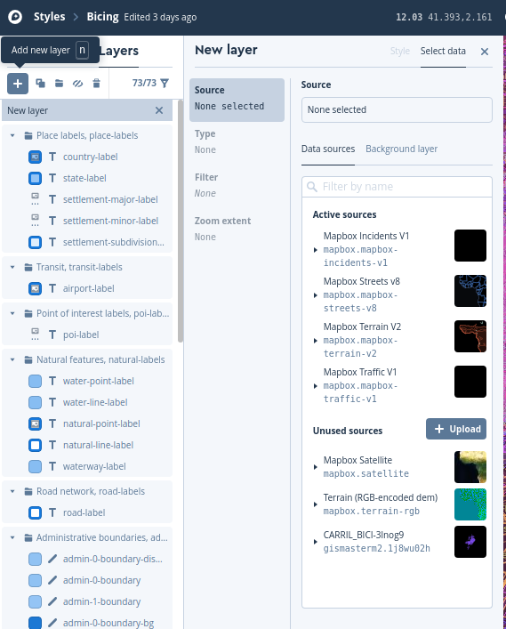

7. Introducción a MapBox

Web
Productos
APIs
Página referéncia MapBox GL!!
GitHUB
Tutoriales
- https://www.mapbox.com/mapbox-gl-js/example/simple-map/
- https://www.mapbox.com/help/tutorials/
- https://www.mapbox.com/help/studio-manual/
- https://ovrdc.github.io/gis-tutorials/mapbox/
Videos
- https://www.youtube.com/watch?v=jrnoFU5Wkdo
- https://www.youtube.com/watch?v=Zn3Xx-TSrM8
- https://www.youtube.com/watch?v=r6Ij_34xTD0
- https://www.youtube.com/watch?v=YhynsA9_fPc
Descripción
MapxBox es una empresa privada que ofrece una plataforma para la publicacón de mapas. Mapbox destaca por creado de forma abierta
- MBTiles
- Vector Tiles
- MapBox GL
¿Cómo empezar?
Vamos a realizar un ejercicio dóne veremos como funciona MapBox Studio, Vector Tiles y Mapbox GL Crearemos un mapa personalizado Nos damos de alta en MapBox
1.Mapa personalizado
Creamos nuestor propio estilo
-
Entramos en MapBox.com
Studio--Styles--New style -
Seleccionamos un estilo como base y cambiamos colores
Publish your style -
Share, develop, and use your style -- Copiamos
Style URLyAccess token

Visualizar estilo propio con Mapbox gl
Creamos Mapbox-estilo.html
1 2 3 4 5 6 7 8 9 10 11 12 13 14 15 16 17 18 19 20 21 22 23 24 25 26 27 28 29 30 31 32 33 34 35 36 37 38 39 40 41 42 43 44 | <html> <head> <meta charset='utf-8' /> <title>Mapbox estilo</title> <meta name='viewport' content='initial-scale=1,maximum-scale=1,user-scalable=no' /> <script src='https://api.tiles.mapbox.com/mapbox-gl-js/v0.52.0/mapbox-gl.js'></script> <link href='https://api.tiles.mapbox.com/mapbox-gl-js/v0.52.0/mapbox-gl.css' rel='stylesheet' /> <style> body { margin: 0; padding: 0; } #map { position: absolute; top: 0; bottom: 0; width: 100%; height: 100% } </style> <script> //Añadir vuestor token y vuestro estilo function init() { mapboxgl.accessToken = 'pk.eyJ1IjoiZ2lzbWFzdGVybTIiLCJhIjoiY2plZHhubTQxMTNoYzMza3Rqa3kxYTdrOCJ9.53B1E6mKD_EQOVb2Y0-SsA'; var map = new mapboxgl.Map({ container: 'map', style: 'mapbox://styles/gismasterm2/cjqg9p2lm00442rqm4vlk89rt', center: [2.16859, 41.3954], zoom: 13, attributionControl: false }); map.addControl(new mapboxgl.AttributionControl({compact: true})); map.addControl(new mapboxgl.NavigationControl()); } </script> </head> <body onload="init()"> <div id="map"></div> </body> </html> |
Note
Los styles normalmente tienen:
1 2 3 4 5 6 7 8 9 10 11 12 13 14 15 | source{ type: "vector" url: id:id_source } layer{ source:id_source, id:id_layer; type: data: paint:{} layout:{} filter:{} } |
2.Crear un Tileset o capa de datos própios
Paso 1
-
Descargamos en formato CSV los accidentes en [http://opendata-ajuntament.barcelona.cat/data/es/dataset/accidents-tipus-gu-bcn"> http://opendata-ajuntament.barcelona.cat/data/es/dataset/accidents-tipus-gu-bcn)
-
Utilizamos QGIS para visualizar y convertir a formato GeoJSON en EPSG:4326 --accidentes2017.geojson
Paso 2 -Añadimos accidentes2017.geojson a Mapbox.com
-
Entramos en MapBox.com
StudioTilesetsNew tilesetArrastramos accidentes2017.geojson -
Copiamos nuestro Mapa Id
-
Share, develop, and use your style-- CopiamosStyle URLyAccess token

Visualizar nuestor propio Tileset
Creamos Mapbox-accidentes.html Ejemplo Accidentes Barcelona
1 2 3 4 5 6 7 8 9 10 11 12 13 14 15 16 17 18 19 20 21 22 23 24 25 26 27 28 29 30 31 32 33 34 35 36 37 38 39 40 41 42 43 44 45 46 47 48 49 50 51 52 53 54 55 56 57 58 59 60 61 62 63 64 65 66 67 68 69 70 71 72 73 74 75 76 77 78 79 80 81 82 83 84 85 86 87 88 89 90 91 92 93 94 95 96 97 98 99 100 101 102 103 104 105 106 107 108 109 110 111 112 113 114 115 116 117 118 119 120 121 122 123 124 125 126 127 128 129 130 131 132 133 134 135 136 137 138 139 140 141 142 143 144 145 146 147 148 149 150 151 152 153 154 155 156 157 158 159 160 161 162 163 164 165 166 167 168 169 170 171 172 173 174 175 176 177 178 179 180 181 182 183 184 185 186 187 188 189 190 191 192 193 194 195 196 197 198 199 200 | <html> <head> <meta charset='utf-8' /> <title>Accidentes BCN</title> <meta name='viewport' content='initial-scale=1,maximum-scale=1,user-scalable=no' /> <script src='https://api.tiles.mapbox.com/mapbox-gl-js/v0.52.0/mapbox-gl.js'></script> <link href='https://api.tiles.mapbox.com/mapbox-gl-js/v0.52.0/mapbox-gl.css' rel='stylesheet' /> <style> body { margin: 0; padding: 0; } #map { position: absolute; top: 0; bottom: 0; width: 100%; height: 100% } .legend { background-color: #fff; border-radius: 3px; bottom: 30px; box-shadow: 0 1px 2px rgba(0, 0, 0, 0.1); font: 12px/20px 'Helvetica Neue', Arial, Helvetica, sans-serif; padding: 10px; position: absolute; right: 10px; z-index: 1; } .legend h4 { margin: 0 0 10px; } .legend p { margin-left: 30px; position: absolute; display: block; top: 0; } .legend div { position: relative; } .legend div span { border-radius: 50%; display: inline-block; margin-right: 5px; opacity: 0.8; background-color: #d49a66; } .map-overlay { font: 12px/20px 'Helvetica Neue', Arial, Helvetica, sans-serif; position: absolute; width: 25%; top: 0; left: 0; padding: 10px; z-index: 100; } .map-overlay .map-overlay-inner { background-color: #fff; box-shadow: 0 1px 2px rgba(0, 0, 0, 0.20); border-radius: 3px; padding: 10px; margin-bottom: 10px; } .map-overlay input { background-color: transparent; display: inline-block; width: 100%; position: relative; margin: 0; cursor: ew-resize; } </style> <script> function Init() { /* Paso 0 var diasSemana = ["Dilluns", "Dimarts", "Dimecres", "Dijous", "Divendres", "Dissabte", "Diumenge"]; var colorDia = ['#e26131', '#d0d378', '#78d3b0', '#78bcd3', '#9e78d3', '#d378cd', '#d37878']; */ mapboxgl.accessToken = 'pk.eyJ1IjoiZ2lzbWFzdGVybTIiLCJhIjoiY2plZHhubTQxMTNoYzMza3Rqa3kxYTdrOCJ9.53B1E6mKD_EQOVb2Y0-SsA'; var map = new mapboxgl.Map({ container: 'map', style: 'mapbox://styles/gismasterm2/cjqg9p2lm00442rqm4vlk89rt', center: [2.16859, 41.3954], zoom: 13, hash: true, pitch: 45, attributionControl: false }); map.addControl(new mapboxgl.AttributionControl({compact: true})); map.addControl(new mapboxgl.NavigationControl()); /* Paso 1 creaLeyenda(); */ map.on('load', function () { map.addSource("accidentes_source", { type: "vector", url: "mapbox://gismasterm2.8n6i6qou" }); //fin map source map.addLayer({ id: "accidentes", type: "circle", source: "accidentes_source", 'source-layer': "accidentes2017-9wsoma", /* pas0 1 paint: { 'circle-radius': 4, 'circle-color': { property: "Descripcio_dia_setmana", type: 'categorical', stops: [ [diasSemana[0], colorDia[0]], [diasSemana[1], colorDia[1]], [diasSemana[2], colorDia[2]], [diasSemana[3], colorDia[3]], [diasSemana[4], colorDia[4]], [diasSemana[5], colorDia[5]], [diasSemana[6], colorDia[6]] ] }, 'circle-opacity': 0.8 } */ /* Paso 2 ,filter:['==', 'Descripcio_dia_setmana', diasSemana[0]] */ }); //fin add layers /* Paso 2 document.getElementById('slider').addEventListener('input', function(e) { filtraDias(e.target.value); }); */ }); //Fin load mapa /* Paso 1 function creaLeyenda() { var leyendaHtml = "<div>Semana</div>"; for (i = 0; i < diasSemana.length; i++) { leyendaHtml = leyendaHtml + '<div><span style="background-color:' + colorDia[i] + ';width:10px;height:10px;margin: 0 5px"></span>' + diasSemana[i] + '</div>'; } document.getElementById('legend').innerHTML = leyendaHtml; } */ /* Paso 2 function filtraDias(numdia){ var filters = ['==', 'Descripcio_dia_setmana', diasSemana[numdia]]; map.setFilter('accidentes', filters); document.getElementById('diasemanaid').textContent = diasSemana[numdia]; } */ } </script> </head> <body onload="Init()"> <!-- Paso 1 <div id='legend' class='legend'> ### Accidentes </div> --> <!-- Pas 2 <div class='map-overlay top'> <div class='map-overlay-inner'> ### Accidentes x dias de la semana <label id='diasemanaid'></label> <input id='slider' type='range' min='0' max='6' step='1' value='0' /> </div> </div> --> <div id='map'></div> </body> </html> |
Note
Probamos:Añadir opción para ver todos los accidentes
3.Añadir estilos (ICGC) y capas externas (GeoJSON)
Podemos trabajar con la libreria JS de Mapbox sin utilizar sus estilos , servicios ni app Tokens
OpenICGC
Presenta estilos y bases Vector Tiles mundiales dónde fusiona datos OSM y del ICGC en un esquema de OpenMapTiles

Mapa de carriles bici con estilo Hibrid
- Seleccionaremos el estilo Hibrid de OpenICGC
- Copiaremos el archivo carriles bici dentro de geoweb
- Creamos archivo mapbox-icgc.html
1 2 3 4 5 6 7 8 9 10 11 12 13 14 15 16 17 18 19 20 21 22 23 24 25 26 27 28 29 30 31 32 33 34 35 36 37 38 39 40 41 42 43 44 45 46 47 48 49 50 51 52 53 54 55 56 57 58 59 60 61 62 63 64 65 | <html> <head> <meta charset='utf-8' /> <title>Carriles bici BCN</title> <meta name='viewport' content='initial-scale=1,maximum-scale=1,user-scalable=no' /> <script src='https://api.tiles.mapbox.com/mapbox-gl-js/v0.52.0/mapbox-gl.js'></script> <link href='https://api.tiles.mapbox.com/mapbox-gl-js/v0.52.0/mapbox-gl.css' rel='stylesheet' /> <style> body { margin: 0; padding: 0; } #map { position: absolute; top: 0; bottom: 0; width: 100%; height: 100% } </style> <script> function Init() { mapboxgl.accessToken = ''; var map = new mapboxgl.Map({ container: 'map', style: 'https://geoserveis.icgc.cat/contextmaps/hibrid.json', center: [2.16859, 41.3954], zoom: 13, hash: true, pitch: 45, attributionControl: false }); map.addControl(new mapboxgl.AttributionControl({ compact: true })); map.addControl(new mapboxgl.NavigationControl()); map.on('load', function () { map.addSource("carrils-bici", { type: "geojson", data: "datos/carrils-bici.geojson" }); //fin map source map.addLayer({ id: "carrils-bici-layer", type: "line", source: "carrils-bici", layout: { "line-join": "round", "line-cap": "round" }, paint: { "line-color": "#FF0000", "line-width": 8 } }); //fin add layers }); //Fin load mapa } </script> </head> <body onload="Init()"> <div id='map'></div> </body> </html> |
Note
Probamos:Cambiar color carriles y estilo de fondo
Warning
Práctica Cementrio. Puntuable!!
-
Creamos nuevo estilo en Mapbox.com
-
Cargamos capas datos/constru_cementerio.geojson y datos/cementerio.geojson
-
Añadimos como tileset en MapxBox
-
Integramos el tileset dentro nuestro estilo creado
MenuAdd Tileset to Style -
Editamos capas
-
Creamos visor ejemplo mapbox-cementerio.html
Extra: Visualizar estilo Mapbox en Leaflet
1 2 3 4 5 6 7 8 9 10 11 12 13 14 15 16 17 18 19 20 21 22 23 24 25 26 27 28 29 30 31 32 33 34 35 36 37 38 39 40 41 42 43 44 45 46 47 48 49 50 51 | <html lang="es"> <head> <title>Leaflet y Mapox</title> <meta charset="utf-8" /> <meta name="viewport" content="width=device-width, initial-scale=1.0"> <meta name="author" content="autor" /> <meta name="description" content="descripción página"> <meta name="robots" content="index,follow"> <link rel="stylesheet" href="https://cdnjs.cloudflare.com/ajax/libs/leaflet/1.3.0/leaflet.css" /> <script src="https://cdnjs.cloudflare.com/ajax/libs/leaflet/1.3.0/leaflet.js"></script> <style> body { margin: 0; padding: 0; overflow: hidden; } #map { height: 100%; width: 100%; } </style> <script> var map; var capa1; function init() { map = L.map('map', { center: [41.6863, 1.8382], zoom: 8, attributionControl: false }); // subtituir por vuestra layer capa1 = L.tileLayer( 'https://api.mapbox.com/styles/v1/gismasterm2/cjcumodeg0i4p2rpaihqxx96w/tiles/256/{z}/{x}/{y}?access_token=pk.eyJ1IjoiZ2lzbWFzdGVybTIiLCJhIjoiY2plZHhubTQxMTNoYzMza3Rqa3kxYTdrOCJ9.53B1E6mKD_EQOVb2Y0-SsA', { maxZoom: 19, minZoom: 1, attribution: 'Mapbox' }); capa1.addTo(map); } </script> </head> <body onload="init()"> <div id="map"></div> </body> </html> |